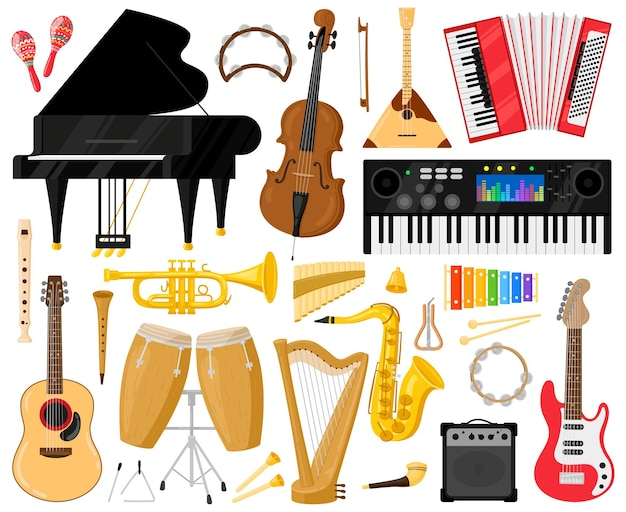

Музыкальные инструменты
В истории было предпринято множество попыток классифицировать музыкальные инструменты. В академической сфере распространено деление инструментов на струнные, духовые, ударные, клавишные и др.
Первые музыкальные инструменты изготавливались из костей животных - в них выдалбливались отверстия для вдувания воздуха. Также были широко распространены различные ударные инструменты (колотушка, трещотка, погремушка из высушенных плодов с косточками или камешками внутри, барабан). Изобретение инструмента для точного построения музыкальных интервалов приписывается Пифагору. Впервые его принцип действия был описан Евклидом полтора столетия спустя, но вплоть до эпохи Возрождения монохорд оставался главным инструментом теоретиков.

-
Определения музыкальных инструментов:
- — предметы, способные издавать звук, эстетически воспринимаемый как музыкальный;
- — инструменты, обладающие способностью воспроизводить при содействии человека ритмически организованные и фиксированные по высоте звуки или четко регулированный ритм;
- — предметы, с помощью которых извлекаются различные музыкальные, а также немузыкальные неорганизованные звуки для исполнения музыкального произведения.
- Виды музыкальных инструментов